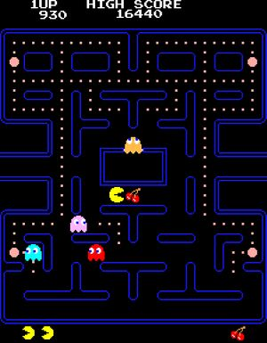
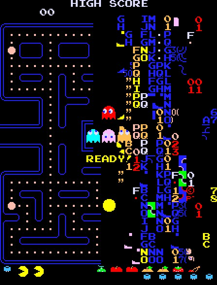

Pac-Man is an arcade- and videogame, which was released in 1980 by Namco.
The Pac-Man video game was so immensely popular that within a year there were spin-offs being created and released, some of them unauthorized.
The most popular of these was Ms. Pac-Man, which first appeared in 1981 as an unauthorized version of the game.
According to Japanese game designer Toru Iwatani, Pac-Man was conceived as an antidote to games with violent themes.
 
Name:
The name Pac-Man comes from the Japanese word "paku paku", so it means "open the mouth and close it". At first it was named "Puck Man" but when it was released in USA, they were afraid that the name would be changed to "Fuck Man", so not the game was renamed to "Pac-Man".The character Pac-Man:
Pac-Man was designed by Toru Iwatani and he told, that he was inspired by a pizza, which lost a piece.Level 256:
Although the main idea was, that the game wouldbe endless, the split-screen-level 256 was irresolvable.
That actually wasn't scheduled, but it happened
by the reason of a mistake.
The Popularity:
In the early 1980s, the nonviolent and goofy nature of Pac-Man made it a phenomenal attraction. About 30 million Americans spent8 million dollar a week playing the game. The arcades, where the machines were located, were noisy, congested places. Because
of that, many towns in the United States passed statues to regulate or restrict the games, just as they were allowed to regulate pinball
machines and pool tables to combat gambling and other "immoral" behaviours.
Record:
David Race from Ohio holds the record for the fastest perfect game of Pac-Man. The record was arrayed in 2012and he scored 3.333.360 points on the 255 levels. He constantly played 4 hours and 33 minutes.